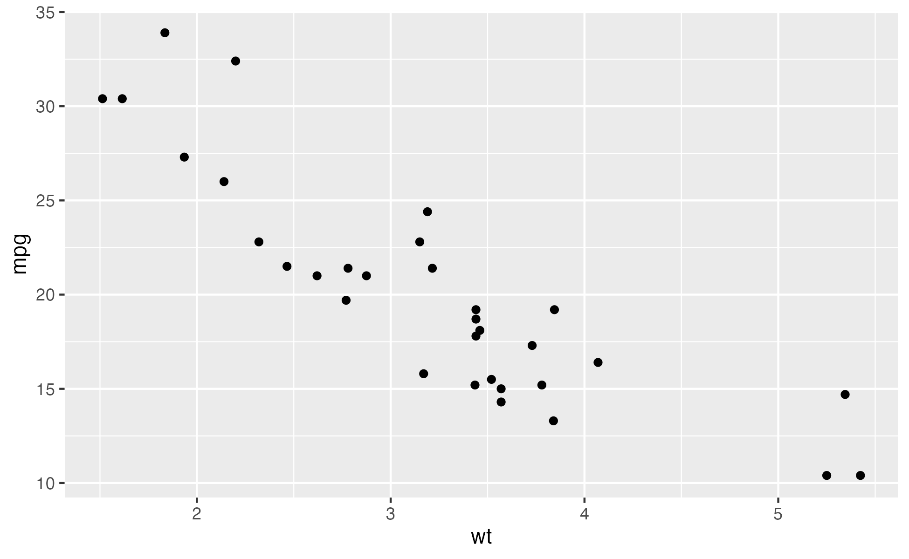
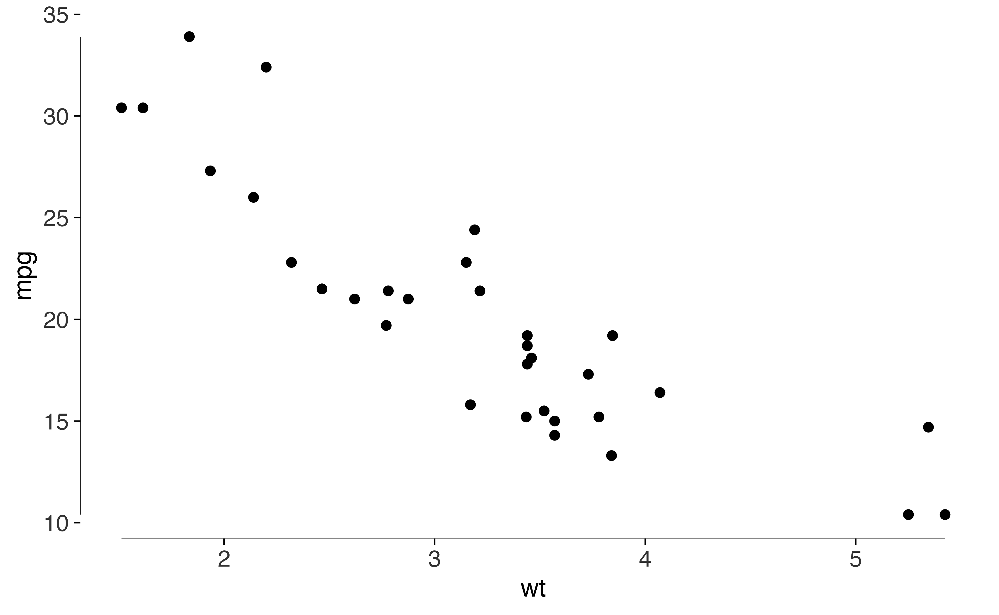
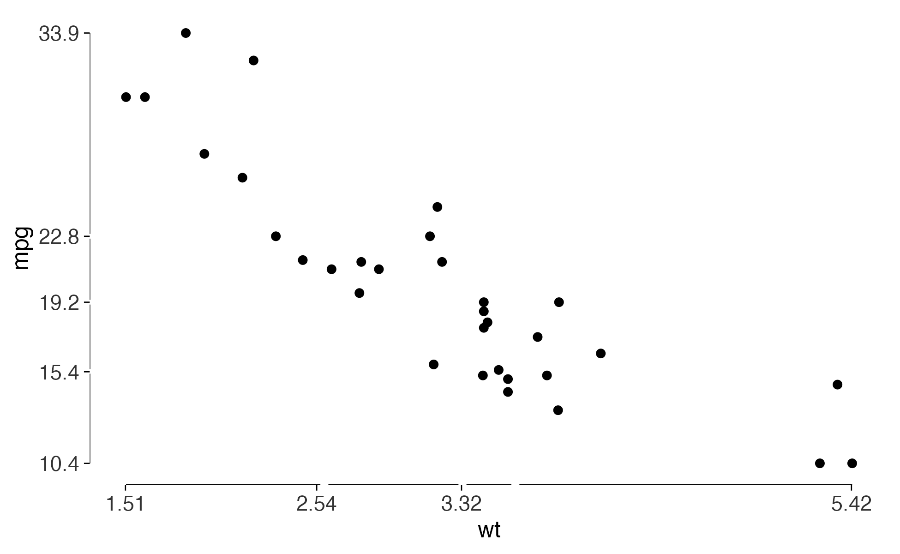
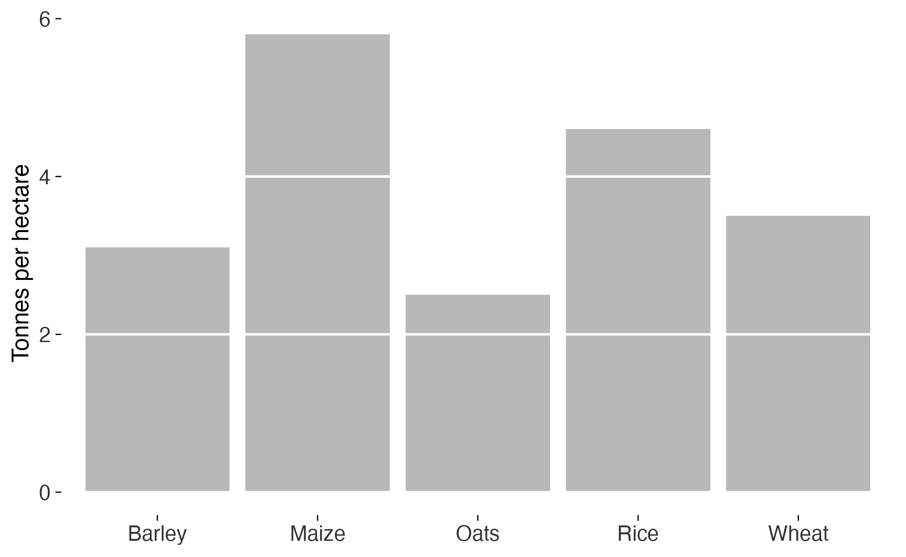
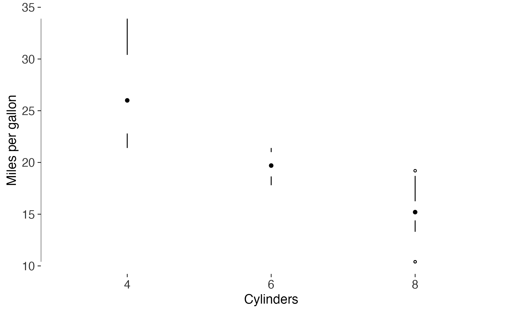
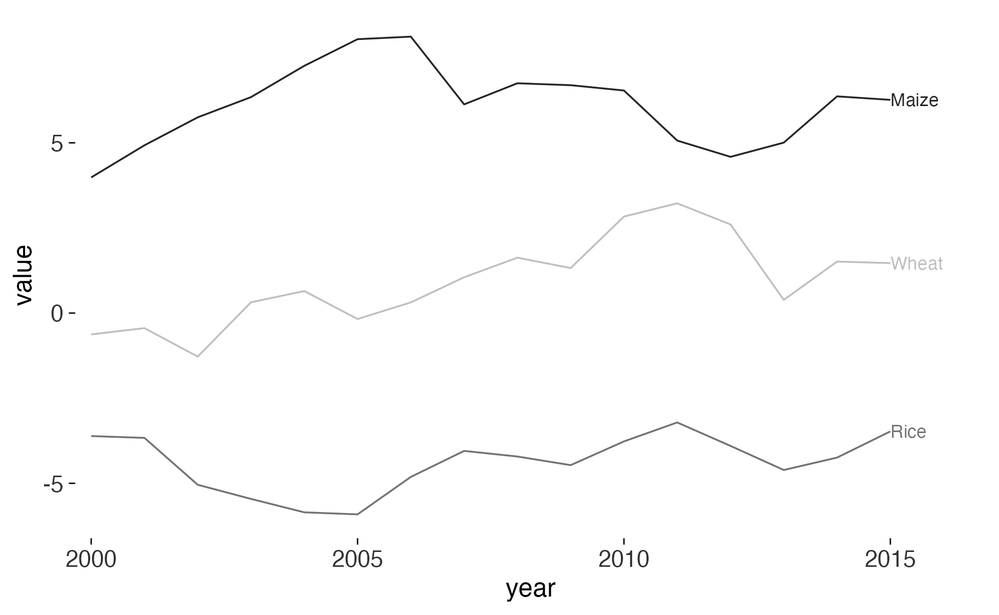
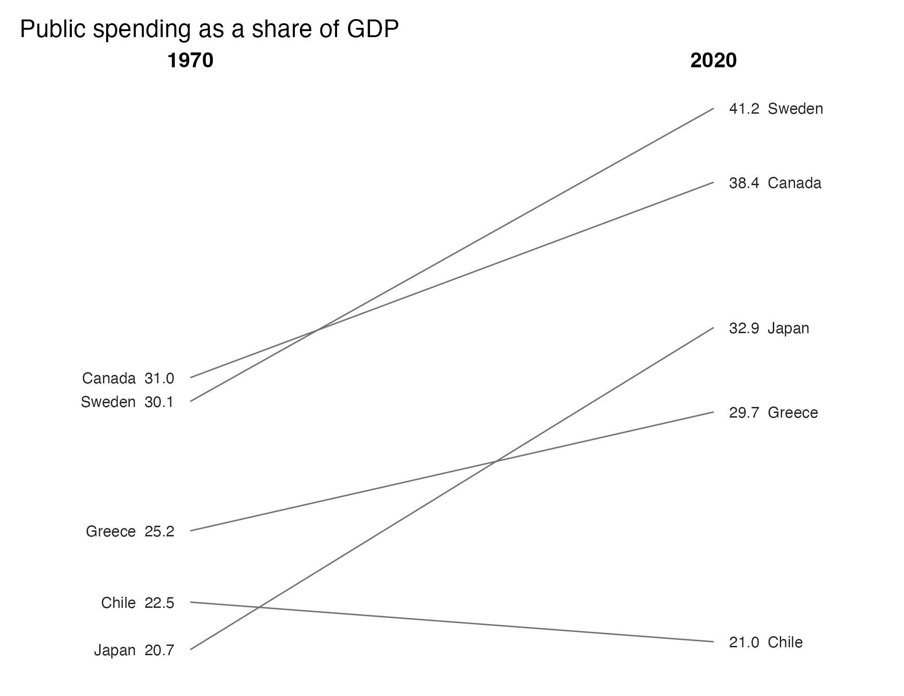
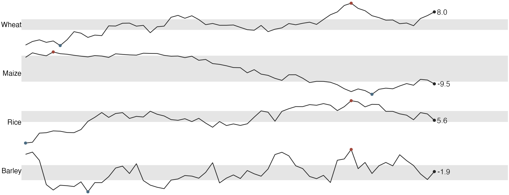
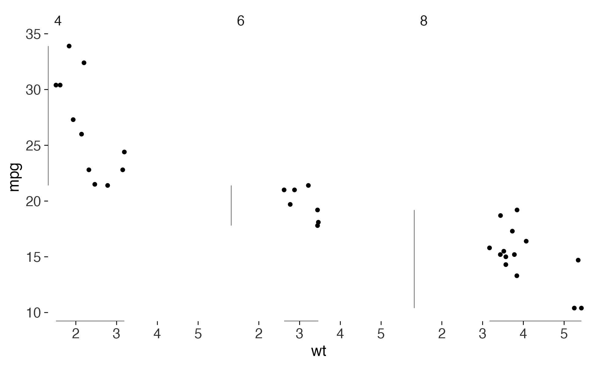

Tufte’s argument in The Visual Display of Quantitative Information is that you can evaluate a statistical graphic. He hands you quantities to do it with: the data-ink ratio, the lie factor, data density. This package takes him at his word in both directions. It gives you the forms he designed, and it gives you the measurements, so a figure you’ve drawn can be examined as well as admired.
One distinction runs through all of it. Tufte states a criterion for some principles, which a graphic either meets or doesn’t, and for others he states only a direction. The audit grades the first kind and measures the second. There’s no score, because collapsing the two would mean making up thresholds and a weighting that aren’t anywhere in his books.
Start with a default plot
Here is a scatterplot as ggplot2 draws it out of the
box.
base <- ggplot(mtcars, aes(wt, mpg)) +
geom_point()
base
Now measure it.
data_ink_ratio(base)
#>
#> ── Data-ink ratio
#> 6% of the ink in this figure varies with the data.
#> • data ink: 2103 pixel-equivalents
#> • non-data ink: 35623
#> • measured at 6.5in x 4in, 150 dpiAlmost none of that ink is doing any work. The grey panel, the white grid, the minor gridlines and the axis furniture take up nearly all of it, and none of them change when the data change.
Erase, then replace the frame
theme_tufte() takes off the background, the grid and the
border. geom_rangeframe() gives you something better in
place of the border. It draws the axis line only across the range the
data occupy, so the frame reports the minimum and maximum for free.
lean <- base +
geom_rangeframe() +
theme_tufte()
lean
data_ink_ratio(lean)
#>
#> ── Data-ink ratio
#> 74% of the ink in this figure varies with the data.
#> • data ink: 3549 pixel-equivalents
#> • non-data ink: 1245
#> • measured at 6.5in x 4in, 150 dpigeom_quartileframe() goes further and breaks the axis at
the quartiles, so it carries the whole five-number summary. Pair it with
quartile_breaks() and the printed labels will agree with
the breaks.
base +
geom_quartileframe() +
scale_x_continuous(breaks = quartile_breaks(mtcars$wt)) +
scale_y_continuous(breaks = quartile_breaks(mtcars$mpg)) +
theme_tufte()
The audit
tufte_audit() reports the stated criteria a figure
misses, each one named with the principle and the chapter it comes from.
Separately, it measures the quantities Tufte gives a direction for.
tufte_audit(lean, width = 6.5, height = 4)
#>
#> ── Tufte audit ──
#>
#> At 6.5in x 4in: 1 stated criterion not met.
#>
#> ── Not met
#> ✖ No caption. Tufte asks that evidence be thoroughly described and its sources
#> named on the graphic itself, so a reader can check the claim without hunting
#> through the surrounding text. See label_source().
#> Documentation - Beautiful Evidence ch. 6
#>
#> ── Measured, not graded
#> Tufte states a direction for these rather than a threshold. Read them against
#> another draft of the same figure.
#> • Data-ink ratio 0.74: 74% of the ink varies with the data. Tufte asks that
#> this be maximised within reason and names no threshold, so read it against
#> another draft of this figure rather than against a target.
#> • Data density 3.2 numbers per square inch: 64 entries over 20.1 square inches.
#> Tufte ranks published graphics by this and sets no minimum.
#> • 1 distinct colour in use. Tufte's advice on colour is qualitative, so this is
#> a count and not a verdict.
#> • 1 series overlaid in one panel. facet_tufte() would show the same data as
#> small multiples. Tufte gives no number at which to switch.
#>
#> ── Met
#> • Panel carries no background fill
#> • No minor gridlines
#> • No full panel border
#> • No pie chart
#> • Lie factor within Tufte's band
#> • No legend to decode
#> • No variable encoded twice
#> • Wider than it is tall
#> • Ink clears the WCAG contrast minimum
#> • Nothing is clipped at the printed sizeThe one that’s left is the one no theme can fix for you. The figure
doesn’t say where its numbers came from. label_source()
handles that.
tufte_audit(lean + label_source("Motor Trend, 1974"), width = 6.5, height = 4)
#>
#> ── Tufte audit ──
#>
#> At 6.5in x 4in: 0 stated criteria not met.
#>
#> ── Measured, not graded
#> Tufte states a direction for these rather than a threshold. Read them against
#> another draft of the same figure.
#> • Data-ink ratio 0.66: 66% of the ink varies with the data. Tufte asks that
#> this be maximised within reason and names no threshold, so read it against
#> another draft of this figure rather than against a target.
#> • Data density 3.4 numbers per square inch: 64 entries over 18.9 square inches.
#> Tufte ranks published graphics by this and sets no minimum.
#> • 1 distinct colour in use. Tufte's advice on colour is qualitative, so this is
#> a count and not a verdict.
#> • 1 series overlaid in one panel. facet_tufte() would show the same data as
#> small multiples. Tufte gives no number at which to switch.
#>
#> ── Met
#> • Panel carries no background fill
#> • No minor gridlines
#> • No full panel border
#> • No pie chart
#> • Lie factor within Tufte's band
#> • No legend to decode
#> • No variable encoded twice
#> • The figure names its source
#> • Wider than it is tall
#> • Ink clears the WCAG contrast minimum
#> • Nothing is clipped at the printed sizeThe audit never grades the data-ink ratio or the data density. Tufte asks that both go in a direction and never says how far, so it reports them and leaves the judgement with you. Read them against another draft of the same figure.
Meeting every stated criterion doesn’t make a figure good. Tufte’s first principle is that content counts most of all, and no function evaluates that. What the audit is good at is the mechanical stuff you stop seeing after the fifth draft.
Graphical integrity
The most common way a real figure lies is a bar chart whose baseline
isn’t zero. Bar length stops being proportional to the quantity it
stands for. lie_factor() measures how far off it gets.
d <- data.frame(president = c("Bush", "Obama"), growth = c(100, 110))
honest <- ggplot(d, aes(president, growth)) + geom_col()
truncated <- honest + coord_cartesian(ylim = c(95, 115))
lie_factor(honest)
#> [1] 1
lie_factor(truncated)
#> [1] 16.66667A ten percent difference drawn as a sixteen-fold one. Tufte treats anything outside roughly 0.95 to 1.05 as distortion, and I think that’s about right.
Given the numbers directly, lie_factor() reproduces his
own examples. The fuel-economy graphic in The Visual Display
showed an eighteen percent change as a line growing by seven hundred and
eighty-three percent.
lie_factor(c(18.0, 27.5), c(0.6, 5.3))
#> [1] 14.84211Bars with the gridlines erased
Bar charts need gridlines, because readers have to recover values from bar heights. A gridline crossing a bar, though, is drawn on top of ink that already carries that value. Tufte’s redesign erases it there instead.
d <- data.frame(
crop = c("Wheat", "Maize", "Rice", "Barley", "Oats"),
yield = c(3.5, 5.8, 4.6, 3.1, 2.5)
)
ggplot(d, aes(crop, yield)) +
geom_col_tufte(fill = "grey72") +
labs(x = NULL, y = "Tonnes per hectare") +
theme_tufte()
Box plots without the box
The box in a box plot holds four numbers, and a line and a dot can hold them just as well.
ggplot(mtcars, aes(factor(cyl), mpg)) +
geom_tufteboxplot() +
geom_rangeframe(sides = "l") +
labs(x = "Cylinders", y = "Miles per gallon") +
theme_tufte()
type = "line" and type = "offset" keep
progressively more, for when the whiskers are short and the
interquartile range needs its own mark.
Labels on the data, not in a legend
A legend makes the reader look away, hold a colour in memory, look
back and match it up. geom_text_last() puts the name where
the eye already is.
series <- data.frame(
year = rep(2000:2015, 3),
value = c(cumsum(rnorm(16)), cumsum(rnorm(16)) + 4, cumsum(rnorm(16)) - 4),
crop = rep(c("Wheat", "Maize", "Rice"), each = 16)
)
ggplot(series, aes(year, value, colour = crop)) +
geom_line(linewidth = 0.4) +
geom_text_last(aes(label = crop), size = 3) +
scale_x_continuous(expand = expansion(mult = c(0.02, 0.12))) +
scale_colour_tufte("grey") +
theme_tufte() +
theme(legend.position = "none")
Slopegraphs
A slopegraph shows before-and-after for many units at once. Every number gets printed on the graphic, which makes the y axis redundant, so it goes. The table and the figure end up being the same object.
d <- data.frame(
country = rep(c("Sweden", "Japan", "Chile", "Canada", "Greece"), each = 2),
year = rep(c("1970", "2020"), 5),
spending = c(30.1, 41.2, 20.7, 32.9, 22.5, 21.0, 31.0, 38.4, 25.2, 29.7)
)
slopegraph(d, year, spending, country) +
labs(title = "Public spending as a share of GDP")
Sparklines
A sparkline is word-sized: small enough to sit inside a sentence, with the normal range as a grey band, dots at the extremes, and the final value printed at the end.
d <- data.frame(
month = rep(1:60, 4),
value = c(cumsum(rnorm(60)), cumsum(rnorm(60)), cumsum(rnorm(60)),
cumsum(rnorm(60))),
series = rep(c("Wheat", "Maize", "Rice", "Barley"), each = 60)
)
sparklines(d, month, value, series)
Small multiples
The answer to multivariate data is repetition rather than
complication: the same graphic, at the same scale, once per condition.
facet_tufte() fixes the scales, because free scales destroy
the comparison the design exists to make.
ggplot(mtcars, aes(wt, mpg)) +
geom_point(size = 1) +
geom_rangeframe() +
facet_tufte(~ cyl) +
theme_tufte()
Before you save
Design a figure carefully, save it at the wrong size, and you get a
truncated subtitle. ggplot2 clips long text rather than
wrapping it. check_labels_fit() renders at the size you
mean to print and measures what fits.
wordy <- lean +
labs(subtitle = paste(rep("A subtitle that runs on rather too long", 4),
collapse = " "))
check_labels_fit(wordy, width = 6.5, height = 4)
#> Warning in check_labels_fit(wordy, width = 6.5, height = 4): 1 element will be clipped at 6.5in x 4in.
#> ✖ subtitle needs 10.18in but has 6.50in.
#> ℹ Hard-wrap the text, widen the canvas, or reduce the font size.
#> # A tibble: 7 × 4
#> element required_in available_in fits
#> <chr> <dbl> <dbl> <lgl>
#> 1 layout (non-panel width) 0.611 6.5 TRUE
#> 2 layout (non-panel height) 0.818 4 TRUE
#> 3 subtitle 10.2 6.5 FALSE
#> 4 x axis title 0.167 5.89 TRUE
#> 5 y axis title 0.333 3.18 TRUE
#> 6 x axis labels (side by side) 0.333 5.89 TRUE
#> 7 y axis labels (stacked) 0.667 3.18 TRUEsave_tufte() runs that check before it writes, so the
warning shows up while you can still do something about it. It defaults
to 6.5 inches wide and uses cairo_pdf for PDF output.
save_tufte("figure-1.pdf", lean, width = 6.5, height = 4)What the package can’t do
tufte_principles() lists every principle, the book it
comes from, and the function that implements it. The
audited column is the honest part. It marks which
principles a function can check and which ones it can’t.
p <- tufte_principles()
p[!p$audited, c("principle", "implemented_by")]
#> # A tibble: 11 × 2
#> principle implemented_by
#> <chr> <chr>
#> 1 Above all else show the data theme_tufte()
#> 2 The dot-dash plot geom_dotdash()
#> 3 Shrink the graphic sparkline(), sparklines()
#> 4 Position beats length geom_cleveland_dot()
#> 5 Layering and separation tufte_pal(), scale_colour_tufte()
#> 6 Micro and macro readings sparklines(), facet_tufte()
#> 7 Show comparisons slopegraph(), facet_tufte()
#> 8 Show causality NA
#> 9 Show multivariate data facet_tufte(), sparklines()
#> 10 Sparklines sparkline(), sparklines(), sparkline_grob()
#> 11 Content counts most of all NAShowing causality, showing comparisons, content counting most of all: a package can’t verify any of that. I think it’s what the figure is for.